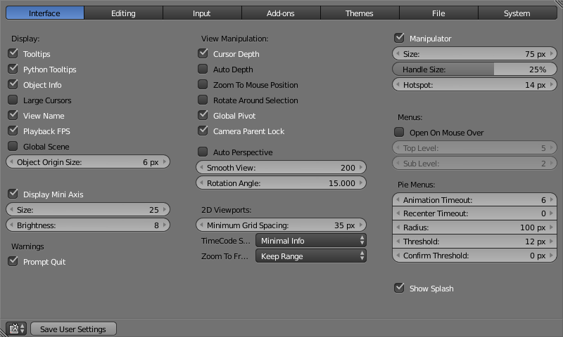

简介
本章解释了如何使用 用户偏好设置 编辑器更改Blender的可自定制设置。
Blender的 用户设置 编辑器中包含用于控制Blender的运作模式的设置。
打开用户设置
通过 菜单打开 用户设置 编辑器。

保存用户设置
自定义设置后，必须手动保存，不然这些设置就在下一次重启之后丢失。
在 用户设置 编辑中，点击底部左侧的 保存用户设置 按钮，可以直接保存新的用户设置。
Hint
最好对用户设置进行备份，以防丢失用户设置。
用户设置存储路径参考 目录布局 章节。
加载初始设置
用于还原默认配置，要注意的是，这并非永久修改，除非保存用户设置。
打开 ，然后还可以通过 用户设置 编辑器保存设置。